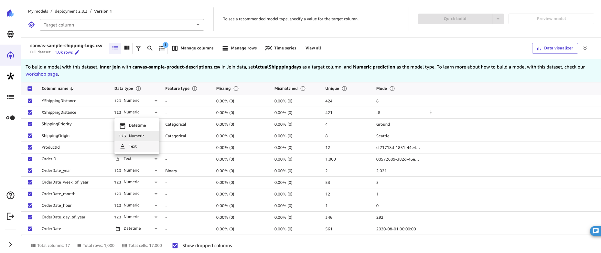

Prepare data with advanced transformations
Note
You can only use advanced transformations for models built on tabular datasets. Multi-category text prediction models are also excluded.
Your machine learning dataset might require data preparation before you build your model. You might want to clean your data due to various issues, which might include missing values or outliers, and perform feature engineering to improve the accuracy of your model. Amazon SageMaker Canvas provides ML data transforms with which you can clean, transform, and prepare your data for model building. You can use these transforms on your datasets without any code. SageMaker Canvas adds the transforms you use to the Model recipe, which is a record of the data preparation done on your data before building the model. Any data transforms you use only modify the input data for model building and do not modify your original data source.
The following transforms are available in SageMaker Canvas for you to prepare your data for building.
Note
The preview of your dataset shows the first 100 rows of the dataset. If your dataset has more than 20,000 rows, Canvas takes a random sample of 20,000 rows and previews the first 100 rows from that sample. You can only search for and specify values from the previewed rows, and the filter functionality only filters the previewed rows and not the entire dataset.
Drop columns
You can exclude a column from your model build by dropping it in the Build tab of the SageMaker Canvas application. Deselect the column you want to drop, and it isn't included when building the model.
Note
If you drop columns and then make batch predictions with your model, SageMaker Canvas adds the dropped columns back to the ouput dataset available for you to download. However, SageMaker Canvas does not add the dropped columns back for time series models.
Filter rows
The filter functionality filters the previewed rows (the first 100 rows of your dataset) according to conditions that you specify. Filtering rows creates a temporary preview of the data and does not impact the model building. You can filter to preview rows that have missing values, contain outliers, or meet custom conditions in a column you choose.
Filter rows by missing values
Missing values are a common occurrence in machine learning datasets. If you have rows with null or empty values in certain columns, you might want to filter for and preview those rows.
To filter missing values from your previewed data, do the following.
-
In the Build tab of the SageMaker Canvas application, choose Filter by rows ( ).
-
Choose the Column you want to check for missing values.
-
For the Operation, choose Is missing.
SageMaker Canvas filters for rows that contain missing values in the Column you selected and provides a preview of the filtered rows.
Filter rows by outliers
Outliers, or rare values in the distribution and range of your data, can negatively impact model accuracy and lead to longer building times. SageMaker Canvas enables you to detect and filter rows that contain outliers in numeric columns. You can choose to define outliers with either standard deviations or a custom range.
To filter for outliers in your data, do the following.
-
In the Build tab of the SageMaker Canvas application, choose Filter by rows ( ).
-
Choose the Column you want to check for outliers.
-
For the Operation, choose Is outlier.
-
Set the Outlier range to either Standard deviation or Custom range.
-
If you choose Standard deviation, specify a SD (standard deviation) value from 1–3. If you choose Custom range, select either Percentile or Number, and then specify the Min and Max values.
The Standard deviation option detects and filters for outliers in
numeric columns using the mean and standard deviation. You specify the number of standard
deviations a value must vary from the mean to be considered an outlier. For example, if you
specify 3 for SD, a value must fall more than 3 standard
deviations from the mean to be considered an outlier.
The Custom range option detects and filters for outliers in numeric columns using minimum and maximum values. Use this method if you know your threshold values that delimit outliers. You can set the Type of the range to either Percentile or Number. If you choose Percentile, the Min and Max values should be the minimum and maximum of the percentile range (0-100) that you want to allow. If you choose Number, the Min and Max values should be the minimum and maximum numeric values that you want to filter in the data.
Filter rows by custom values
You can filter for rows with values that meet custom conditions. For example, you might want to preview rows that have a price value greater than 100 before removing them. With this functionality, you can filter rows that exceed the threshold you set and preview the filtered data.
To use the custom filter functionality, do the following.
-
In the Build tab of the SageMaker Canvas application, choose Filter by rows ( ).
-
Choose the Column you want to check.
-
Select the type of Operation you want to use, and then specify the values for the selected condition.
For the Operation, you can choose one of the following options. Note
that the available operations depend on the data type of the column you choose. For example,
you cannot create a is greater than operation for a column containing text
values.
| Operation | Supported data type | Supported feature type | Function |
|---|---|---|---|
|
Is equal to |
Numeric, Text |
Binary, Categorical |
Filters rows where the value in Column equals the values you specify. |
|
Is not equal to |
Numeric, Text |
Binary, Categorical |
Filters rows where the value in Column doesn't equal the values you specify. |
|
Is less than |
Numeric |
N/A |
Filters rows where the value in Column is less than the value you specify. |
|
Is less than or equal to |
Numeric |
N/A |
Filters rows where the value in Column is less than or equal to the value you specify. |
|
Is greater than |
Numeric |
N/A |
Filters rows where the value in Column is greater than the value you specify. |
|
Is greater than or equal to |
Numeric |
N/A |
Filters rows where the value in Column is greater than or equal to the value you specify. |
|
Is between |
Numeric |
N/A |
Filters rows where the value in Column is between or equal to two values you specify. |
|
Contains |
Text |
Categorical |
Filters rows where the value in Column contains a values you specify. |
|
Starts with |
Text |
Categorical |
Filters rows where the value in Column begins with a value you specify. |
|
Ends with |
Categorical |
Categorical |
Filters rows where the value in Column ends with a value you specify. |
After you set the filter operation, SageMaker Canvas updates the preview of the dataset to show you the filtered data.
Functions and operators
You can use mathematical functions and operators to explore and distribute your data. You can use the SageMaker Canvas supported functions or create your own formula with your existing data and create a new column with the result of the formula. For example, you can add the corresponding values of two columns and save the result to a new column.
You can nest statements to create more complex functions. The following are some examples of nested functions that you might use.
-
To calculate BMI, you could use the function
weight / (height ^ 2). -
To classify ages, you could use the function
Case(age < 18, 'child', age < 65, 'adult', 'senior').
You can specify functions in the data preparation stage before you build your model. To use a function, do the following.
-
In the Build tab of the SageMaker Canvas app, choose View all and then choose Custom formula to open the Custom formula panel.
-
In the Custom formula panel, you can choose a Formula to add to your Model Recipe. Each formula is applied to all of the values in the columns you specify. For formulas that accept two or more columns as arguments, use columns with matching data types; otherwise, you will get an error or
nullvalues in the new column. -
After you’ve specified a Formula, add a column name in the New Column Name field. SageMaker Canvas uses this name for the new column that is created.
(Optional) Choose Preview to preview your transform.
-
To add the function to your Model Recipe, choose Add.
SageMaker Canvas saves the result of your function to a new column using the name you specified in New Column Name. You can view or remove functions from the Model Recipe panel.
SageMaker Canvas supports the following operators for functions. You can use either the text format or the in-line format to specify your function.
| Operator | Description | Supported data types | Text format | In-line format |
|---|---|---|---|---|
|
Add |
Returns the sum of the values |
Numeric |
Add(sales1, sales2) |
sales1 + sales2 |
|
Subtract |
Returns the difference between the values |
Numeric |
Subtract(sales1, sales2) |
sales1 ‐ sales2 |
|
Multiply |
Returns the product of the values |
Numeric |
Multiply(sales1, sales2) |
sales1 * sales2 |
|
Divide |
Returns the quotient of the values |
Numeric |
Divide(sales1, sales2) |
sales1 / sales2 |
|
Mod |
Returns the result of the modulo operator (the remainder after dividing the two values) |
Numeric |
Mod(sales1, sales2) |
sales1 % sales2 |
|
Abs |
Returns the absolute value of the value |
Numeric |
Abs(sales1) |
N/A |
|
Negate |
Returns the negative of the value |
Numeric |
Negate(c1) |
‐c1 |
|
Exp |
Returns e (Euler's number) raised to the power of the value |
Numeric |
Exp(sales1) |
N/A |
|
Log |
Returns the logarithm (base 10) of the value |
Numeric |
Log(sales1) |
N/A |
|
Ln |
Returns the natural logarithm (base e) of the value |
Numeric |
Ln(sales1) |
N/A |
|
Pow |
Returns the value raised to a power |
Numeric |
Pow(sales1, 2) |
sales1 ^ 2 |
|
If |
Returns a true or false label based on a condition you specify |
Boolean, Numeric, Text |
If(sales1>7000, 'truelabel, 'falselabel') |
N/A |
|
Or |
Returns a boolean value of whether one of the specified values/conditions is true or not |
Boolean |
Or(fullprice, discount) |
fullprice || discount |
|
And |
Returns a boolean value of whether two of the specified values/conditions are true or not |
Boolean |
And(sales1,sales2) |
sales1 && sales2 |
|
Not |
Returns a boolean value that is the opposite of the specified value/conditions |
Boolean |
Not(sales1) |
!sales1 |
|
Case |
Returns a boolean value based on conditional statements (returns c1 if cond1 is true, returns c2 if cond2 is true, else returns c3) |
Boolean, Numeric, Text |
Case(cond1, c1, cond2, c2, c3) |
N/A |
|
Equal |
Returns a boolean value of whether two values are equal |
Boolean, Numeric, Text |
N/A |
c1 = c2 c1 == c2 |
|
Not equal |
Returns a boolean value of whether two values are not equal |
Boolean, Numeric, Text |
N/A |
c1 != c2 |
|
Less than |
Returns a boolean value of whether c1 is less than c2 |
Boolean, Numeric, Text |
N/A |
c1 < c2 |
|
Greater than |
Returns a boolean value of whether c1 is greater than c2 |
Boolean, Numeric, Text |
N/A |
c1 > c2 |
|
Less than or equal |
Returns a boolean value of whether c1 is less than or equal to c2 |
Boolean, Numeric, Text |
N/A |
c1 <= c2 |
|
Greater than or equal |
Returns a boolean value of whether c1 is greater than or equal to c2 |
Boolean, Numeric, Text |
N/A |
c1 >= c2 |
SageMaker Canvas also supports aggregate operators, which can perform operations such as calculating
the sum of all the values or finding the minimum value in a column. You can use aggregate
operators in combination with standard operators in your functions. For example, to calculate
the difference of values from the mean, you could use the function Abs(height –
avg(height)). SageMaker Canvas supports the following aggregate operators.
| Aggregate operator | Description | Format | Example |
|---|---|---|---|
|
sum |
Returns the sum of all the values in a column |
sum |
sum(c1) |
|
minimum |
Returns the minimum value of a column |
min |
min(c2) |
|
maximum |
Returns the maximum value of a column |
max |
max(c3) |
|
average |
Returns the average value of a column |
avg |
avg(c4) |
|
std |
Returns the sample standard deviation of a column | std |
std(c1) |
|
stddev |
Returns the standard deviation of the values in a column | stddev |
stddev(c1) |
|
variance |
Returns the unbiased variance of the values in a column |
variance |
variance(c1) |
|
approx_count_distinct |
Returns the approximate number of distinct items in a column | approx_count_distinct |
approx_count_distinct(c1) |
|
count |
Returns the number of items in a column | count |
count(c1) |
|
first |
Returns the first value of a column |
first |
first(c1) |
|
last |
Returns the last value of a column |
last |
last(c1) |
|
stddev_pop |
Returns the population standard deviation of a column | stddev_pop |
stddev_pop(c1) |
|
variance_pop |
Returns the population variance of the values in a column |
variance_pop |
variance_pop(c1) |
Manage rows
With the Manage rows transform, you can perform sort, random shuffle, and remove rows of data from the dataset.
Sort rows
To sort the rows in a dataset by a given column, do the following.
-
In the Build tab of the SageMaker Canvas application, choose Manage rows and then choose Sort rows.
-
For Sort Column, choose the column you want to sort by.
-
For Sort Order, choose either Ascending or Descending.
-
Choose Add to add the transform to the Model recipe.
Shuffle rows
To randomly shuffle the rows in a dataset, do the following.
-
In the Build tab of the SageMaker Canvas application, choose Manage rows and then choose Shuffle rows.
-
Choose Add to add the transform to the Model recipe.
Drop duplicate rows
To remove duplicate rows in a dataset, do the following.
-
In the Build tab of the SageMaker Canvas application, choose Manage rows and then choose Drop duplicate rows.
-
Choose Add to add the transform to the Model recipe.
Remove rows by missing values
Missing values are a common occurrence in machine learning datasets and can impact model accuracy. Use this transform if you want to drop rows with null or empty values in certain columns.
To remove rows that contain missing values in a specified column, do the following.
-
In the Build tab of the SageMaker Canvas application, choose Manage rows.
Choose Drop rows by missing values.
-
Choose Add to add the transform to the Model recipe.
SageMaker Canvas drops rows that contain missing values in the Column you selected. After removing the rows from the dataset, SageMaker Canvas adds the transform in the Model recipe section. If you remove the transform from the Model recipe section, the rows return to your dataset.
Remove rows by outliers
Outliers, or rare values in the distribution and range of your data, can negatively impact model accuracy and lead to longer building times. With SageMaker Canvas, you can detect and remove rows that contain outliers in numeric columns. You can choose to define outliers with either standard deviations or a custom range.
To remove outliers from your data, do the following.
-
In the Build tab of the SageMaker Canvas application, choose Manage rows.
Choose Drop rows by outlier values.
-
Choose the Column you want to check for outliers.
-
Set the Operator to Standard deviation, Custom numeric range, or Custom quantile range.
-
If you choose Standard deviation, specify a Standard deviations (standard deviation) value from 1–3. If you choose Custom numeric range or Custom quantile range, specify the Min and Max values (numbers for numeric ranges, or percentiles between 0–100% for quantile ranges).
-
Choose Add to add the transform to the Model recipe.
The Standard deviation option detects and removes outliers in numeric
columns using the mean and standard deviation. You specify the number of standard deviations a
value must vary from the mean to be considered an outlier. For example, if you specify
3 for Standard deviations, a value must fall more than 3 standard deviations
from the mean to be considered an outlier.
The Custom numeric range and Custom quantile range options detect and remove outliers in numeric columns using minimum and maximum values. Use this method if you know your threshold values that delimit outliers. If you choose a numeric range, the Min and Max values should be the minimum and maximum numeric values that you want to allow in the data. If you choose a quantile range, the Min and Max values should be the minimum and maximum of the percentile range (0–100) that you want to allow.
After removing the rows from the dataset, SageMaker Canvas adds the transform in the Model recipe section. If you remove the transform from the Model recipe section, the rows return to your dataset.
Remove rows by custom values
You can remove rows with values that meet custom conditions. For example, you might want to exclude all of the rows with a price value greater than 100 when building your model. With this transform, you can create a rule that removes all rows that exceed the threshold you set.
To use the custom remove transform, do the following.
-
In the Build tab of the SageMaker Canvas application, choose Manage rows.
Choose Drop rows by formula.
-
Choose the Column you want to check.
-
Select the type of Operation you want to use, and then specify the values for the selected condition.
-
Choose Add to add the transform to the Model recipe.
For the Operation, you can choose one of the following options. Note
that the available operations depend on the data type of the column you choose. For example,
you cannot create a is greater than operation for a column containing text
values.
| Operation | Supported data type | Supported feature type | Function |
|---|---|---|---|
|
Is equal to |
Numeric, Text |
Binary, Categorical |
Removes rows where the value in Column equals the values you specify. |
|
Is not equal to |
Numeric, Text |
Binary, Categorical |
Removes rows where the value in Column doesn't equal the values you specify. |
|
Is less than |
Numeric |
N/A |
Removes rows where the value in Column is less than the value you specify. |
|
Is less than or equal to |
Numeric |
N/A |
Removes rows where the value in Column is less than or equal to the value you specify. |
|
Is greater than |
Numeric |
N/A |
Removes rows where the value in Column is greater than the value you specify. |
|
Is greater than or equal to |
Numeric |
N/A |
Removes rows where the value in Column is greater than or equal to the value you specify. |
|
Is between |
Numeric |
N/A |
Removes rows where the value in Column is between or equal to two values you specify. |
|
Contains |
Text |
Categorical |
Removes rows where the value in Column contains a values you specify. |
|
Starts with |
Text |
Categorical |
Removes rows where the value in Column begins with a value you specify. |
|
Ends with |
Text |
Categorical |
Removes rows where the value in Column ends with a value you specify. |
After removing the rows from the dataset, SageMaker Canvas adds the transform in the Model recipe section. If you remove the transform from the Model recipe section, the rows return to your dataset.
Rename columns
With the rename columns transform, you can rename columns in your data. When you rename a column, SageMaker Canvas changes the column name in the model input.
You can rename a column in your dataset by double-clicking on the column name in the
Build tab of the SageMaker Canvas application and entering a new name. Pressing the
Enter key submits the change, and clicking anywhere outside
the input cancels the change. You can also rename a column by clicking the More
options icon (
 ), located at the end of the row in list view or at the end of the header
cell in grid view, and choosing Rename.
), located at the end of the row in list view or at the end of the header
cell in grid view, and choosing Rename.
Your column name can’t be longer than 32 characters or have double underscores (__), and you can’t rename a column to the same name as another column. You also can’t rename a dropped column.
The following screenshot shows how to rename a column by double-clicking the column name.
When you rename a column, SageMaker Canvas adds the transform in the Model recipe section. If you remove the transform from the Model recipe section, the column reverts to its original name.
Manage columns
With the following transforms, you can change the data type of columns and replace missing values or outliers for specific columns. SageMaker Canvas uses the updated data types or values when building your model but doesn’t change your original dataset. Note that if you've dropped a column from your dataset using the Drop columns transform, you can't replace values in that column.
Replace missing values
Missing values are a common occurrence in machine learning datasets and can impact model accuracy. You can choose to drop rows that have missing values, but your model is more accurate if you choose to replace the missing values instead. With this transform, you can replace missing values in numeric columns with the mean or median of the data in a column, or you can also specify a custom value with which to replace missing values. For non-numeric columns, you can replace missing values with the mode (most common value) of the column or a custom value.
Use this transform if you want to replace the null or empty values in certain columns. To replace missing values in a specified column, do the following.
-
In the Build tab of the SageMaker Canvas application, choose Manage columns.
Choose Replace missing values.
-
Choose the Column in which you want to replace missing values.
-
Set Mode to Manual to replace missing values with values that you specify. With the Automatic (default) setting, SageMaker Canvas replaces missing values with imputed values that best fit your data. This imputation method is done automatically for each model build, unless you specify the Manual mode.
-
Set the Replace with value:
-
If your column is numeric, then select Mean, Median, or Custom. Mean replaces missing values with the mean for the column, and Median replaces missing values with the median for the column. If you choose Custom, then you must specify a custom value that you want to use to replace missing values.
-
If your column is non-numeric, then select Mode or Custom. Mode replaces missing values with the mode, or the most common value, for the column. For Custom, specify a custom value. that you want to use to replace missing values.
-
-
Choose Add to add the transform to the Model recipe.
After replacing the missing values in the dataset, SageMaker Canvas adds the transform in the Model recipe section. If you remove the transform from the Model recipe section, the missing values return to the dataset.
Replace outliers
Outliers, or rare values in the distribution and range of your data, can negatively impact model accuracy and lead to longer building times. SageMaker Canvas enables you to detect outliers in numeric columns and replace the outliers with values that lie within an accepted range in your data. You can choose to define outliers with either standard deviations or a custom range, and you can replace outliers with the minimum and maximum values in the accepted range.
To replace outliers in your data, do the following.
-
In the Build tab of the SageMaker Canvas application, choose Manage columns.
Choose Replace outlier values.
-
Choose the Column in which you want to replace outliers.
-
For Define outliers, choose Standard deviation, Custom numeric range, or Custom quantile range.
-
If you choose Standard deviation, specify a Standard deviations (standard deviation) value from 1–3. If you choose Custom numeric range or Custom quantile range, specify the Min and Max values (numbers for numeric ranges, or percentiles between 0–100% for quantile ranges).
-
For Replace with, select Min/max range.
-
Choose Add to add the transform to the Model recipe.
The Standard deviation option detects outliers in numeric columns using the mean and standard deviation. You specify the number of standard deviations a value must vary from the mean to be considered an outlier. For example, if you specify 3 for Standard deviations, a value must fall more than 3 standard deviations from the mean to be considered an outlier. SageMaker Canvas replaces outliers with the minimum value or maximum value in the accepted range. For example, if you configure the standard deviations to only include values from 200–300, then SageMaker Canvas changes a value of 198 to 200 (the minimum).
The Custom numeric range and Custom quantile range options detect outliers in numeric columns using minimum and maximum values. Use this method if you know your threshold values that delimit outliers. If you choose a numeric range, the Min and Max values should be the minimum and maximum numeric values that you want to allow. SageMaker Canvas replaces any values that fall outside of the minimum and maximum to the minimum and maximum values. For example, if your range only allows values from 1–100, then SageMaker Canvas changes a value of 102 to 100 (the maximum). If you choose a quantile range, the Min and Max values should be the minimum and maximum of the percentile range (0–100) that you want to allow.
After replacing the values in the dataset, SageMaker Canvas adds the transform in the Model recipe section. If you remove the transform from the Model recipe section, the original values return to the dataset.
Change data type
SageMaker Canvas provides you with the ability to change the data type of your columns between numeric, text, and datetime, while also displaying the associated feature type for that data type. A data type refers to the format of the data and how it is stored, while the feature type refers to the characteristic of the data used in machine learning algorithms, such as binary or categorical. This gives you the flexibility to manually change the type of data in your columns based on the features. The ability to choose the right data type ensures data integrity and accuracy prior to building models. These data types are used when building models.
Note
Currently, changing the feature type (for example, from binary to categorical) is not supported.
The following table lists all of the supported data types in Canvas.
| Data type | Description | Example |
|---|---|---|
Numeric |
Numeric data represents numerical values |
1, 2, 3 1.1, 1.2. 1.3 |
Text |
Text data represents sequences of characters, like names or descriptions |
A, B, C, D apple, banana, orange 1A!, 2A!, 3A! |
Datetime |
Datetime data represents dates and times in timestamp format |
2019-07-01 01:00:00, 2019-07-01 02:00:00, 2019-07-01 03:00:00 |
The following table lists all of the supported feature types in Canvas.
| Feature type | Description | Example |
|---|---|---|
Binary |
Binary features represent two possible values |
0, 1, 0, 1, 0 (2 distinct values) true, false, true (2 distinct values) |
Categorical |
Categorical features represent distinct categories or groups |
apple, banana, orange, apple (3 distinct values) A, B, C, D, E, A, D, C (5 distinct values) |
To modify data type of a column in a dataset, do the following.
-
In the Build tab of the SageMaker Canvas application, go to the Column view or Grid view and select the Data type dropdown for the specific column.
-
In the Data type dropdown, choose the data type to convert to. The following screenshot shows the dropdown menu.
 -
For Column, choose or verify the column you want to change the data type for.
-
For New data type, choose or verify the new data type you want to convert to.
-
If the New data type is
DatetimeorNumeric, choose one of the following options under Handle invalid values:Replace with empty value – Invalid values are substituted with an empty value
Delete rows – Rows with an invalid value are removed from the dataset
Replace with custom value – Invalid values are substituted with the Custom Value that you specify.
-
Choose Add to add the transform to the Model recipe.
The data type for your column should now be updated.
Prepare time series data
Use the following functionalities to prepare your time series data for building time series forecasting models.
Resample time series data
By resampling time-series data, you can establish regular intervals for the observations in your time series dataset. This is particularly useful when working with time series data containing irregularly spaced observations. For instance, you can use resampling to transform a dataset with observations recorded every one hour, two hour and three hour intervals into a regular one hour interval between observations. Forecasting algorithms require the observations to be taken at regular intervals.
To resample time series data, do the following.
-
In the Build tab of the SageMaker Canvas application, choose Time series.
-
Choose Resample.
-
For Timestamp column, choose the column you want to apply the transform to. You can only select columns of the Datetime type.
-
In the Frequency settings section, choose a Frequency and Rate. Frequency is the unit of frequency and Rate is the interval of the unit of frequency to be applied to the column. For example, choosing
Calendar Dayfor Frequency value and1for Rate sets the interval to increase every 1 calendar day, such as2023-03-26 00:00:00,2023-03-27 00:00:00,2023-03-28 00:00:00. See the table after this procedure for a complete list of Frequency value. -
Choose Add to add the transform to the Model recipe.
The following table lists all of the Frequency types you can select when resampling time series data.
| Frequency | Description | Example values (assuming Rate is 1) |
|---|---|---|
|
Business Day |
Resample observations in the datetime column to 5 business days of the week (Monday, Tuesday, Wednesday, Thursday, Friday) |
2023-03-24 00:00:00 2023-03-27 00:00:00 2023-03-28 00:00:00 2023-03-29 00:00:00 2023-03-30 00:00:00 2023-03-31 00:00:00 2023-04-03 00:00:00 |
|
Calendar Day |
Resample observations in the datetime column to all 7 days of the week (Monday, Tuesday, Wednesday, Thursday, Friday, Saturday, Sunday) |
2023-03-26 00:00:00 2023-03-27 00:00:00 2023-03-28 00:00:00 2023-03-29 00:00:00 2023-03-30 00:00:00 2023-03-31 00:00:00 2023-04-01 00:00:00 |
|
Week |
Resample observations in the datetime column to the first day of each week |
2023-03-13 00:00:00 2023-03-20 00:00:00 2023-03-27 00:00:00 2023-04-03 00:00:00 |
|
Month |
Resample observations in the datetime column to the first day of each month |
2023-03-01 00:00:00 2023-04-01 00:00:00 2023-05-01 00:00:00 2023-06-01 00:00:00 |
|
Annual Quarter |
Resample observations in the datetime column to the last day of each quarter |
2023-03-31 00:00:00 2023-06-30 00:00:00 2023-09-30 00:00:00 2023-12-31 00:00:00 |
|
Year |
Resample observations in the datetime column to the last day of each year |
2022-12-31 0:00:00 2023-12-31 00:00:00 2024-12-31 00:00:00 |
|
Hour |
Resample observations in the datetime column to each hour of each day |
2023-03-24 00:00:00 2023-03-24 01:00:00 2023-03-24 02:00:00 2023-03-24 03:00:00 |
|
Minute |
Resample observations in the datetime column to each minute of each hour |
2023-03-24 00:00:00 2023-03-24 00:01:00 2023-03-24 00:02:00 2023-03-24 00:03:00 |
|
Second |
Resample observations in the datetime column to each second of each minute |
2023-03-24 00:00:00 2023-03-24 00:00:01 2023-03-24 00:00:02 2023-03-24 00:00:03 |
When applying the resampling transform, you can use the Advanced option to specify how the resulting values of the rest of the columns (other than the timestamp column) in your dataset are modified. This can be achieved by specifying the resampling methodology, which can either be downsampling or upsampling for both numeric and non-numeric columns.
Downsampling increases the interval between observations in the dataset. For example, if you downsample observations that are taken either every hour or every two hours, each observation in your dataset is taken every two hours. The values of other columns of the hourly observations are aggregated into a single value using a combination method. The following tables show an example of downsampling time series data by using mean as the combination method. The data is downsampled from every two hours to every hour.
The following table shows the hourly temperature readings over a day before downsampling.
| Timestamp | Temperature (Celsius) |
|---|---|
12:00 pm |
30 |
1:00 am |
32 |
2:00 am |
35 |
3:00 am |
32 |
4:00 am |
30 |
The following table shows the temperature readings after downsampling to every two hours.
| Timestamp | Temperature (Celsius) |
|---|---|
12:00 pm |
30 |
2:00 am |
33.5 |
2:00 am |
35 |
4:00 am |
32.5 |
To downsample time series data, do the following:
-
Expand the Advanced section under the Resample transform.
-
Choose Non-numeric combination to specify the combination method for non-numeric columns. See the table below for a complete list of combination methods.
-
Choose Numeric combination to specify the combination method for numeric columns. See the table below for a complete list of combination methods.
If you don’t specify combination methods, the default values are Most Common
for Non-numeric combination and Mean for Numeric
combination. The following table lists the methods for numeric and non-numeric
combination.
| Downsampling methodology | Combination method | Description |
|---|---|---|
Non-numeric combination |
Most Common |
Aggregate values in the non-numeric column by the most commonly ocurring value |
Non-numeric combination |
Last |
Aggregate values in the non-numeric column by the last value in the column |
Non-numeric combination |
First |
Aggregate values in the non-numeric column by the first value in the column |
Numeric combination |
Mean |
Aggregate values in the numeric column by the taking the mean of all the values in the column |
Numeric combination |
Median |
Aggregate values in the numeric column by the taking the median of all the values in the column |
Numeric combination |
Min |
Aggregate values in the numeric column by the taking the minimum of all the values in the column |
Numeric combination |
Max |
Aggregate values in the numeric column by the taking the maximum of all the values in the column |
Numeric combination |
Sum |
Aggregate values in the numeric column by adding all the values in the column |
Numeric combination |
Quantile |
Aggregate values in the numeric column by the taking the quantile of all the values in the column |
Upsampling reduces the interval between observations in the dataset. For example, if you upsample observations that are taken every two hours into hourly observations, the values of other columns of the hourly observations are interpolated from the ones that have been taken every two hours.
To upsample time series data, do the following:
-
Expand the Advanced section under the Resample transform.
-
Choose Non-numeric estimation to specify the estimation method for non-numeric columns. See the table after this procedure for a complete list of methods.
-
Choose Numeric estimation to specify the estimation method for numeric columns. See the table below for a complete list of methods.
-
(Optional) Choose ID Column to specify the column that has the IDs of the observations of the time series. Specify this option if your dataset has two time series. If you have a column representing only one time series, don't specify a value for this field. For example, you can have a dataset that has the columns
idandpurchase. Theidcolumn has the following values:[1, 2, 2, 1]. Thepurchasecolumn has the following values[$2, $3, $4, $1]. Therefore, the dataset has two time series—one time series is:1: [$2, $1], and the other time series is2: [$3, $4].
If you don’t specify estimation methods, the default values are Forward Fill
for Non-numeric estimation and Linear for Numeric
estimation. The following table lists the methods for estimation.
| Upsampling methodology | Estimation method | Description |
|---|---|---|
Non-numeric estimation |
Forward Fill |
Interpolate values in the non-numeric column by taking the consecutive values after all the values in the column |
Non-numeric estimation |
Backward Fill |
Interpolate values in the non-numeric column by taking the consecutive values before all the values in the column |
Non-numeric estimation |
Keep Missing |
Interpolate values in the non-numeric column by showing empty values |
Numeric estimation |
Linear, Time, Index, Zero, S-Linear, Nearest, Quadratic, Cubic, Barycentric, Polynomial, Krogh, Piecewise Polynomial, Spline, P-chip, Akima, Cubic Spline, From Derivatives |
Interpolate values in the numeric column by using the specfied interpolator. For
information on interpolation methods, see pandas.DataFrame.interpolate |
The following screenshot shows the Advanced settings with the fields for downsampling and upsampling filled out.
Use datetime extraction
With the datetime extraction transform, you can extract values from a datetime column to a separate column. For example, if you have a column containing dates of purchases, you can extract the month value to a separate column and use the new column when building your model. You can also extract multiple values to separate columns with a single transform.
Your datetime column must use a supported timestamp format. For a list of the formats that SageMaker Canvas supports, see Time Series Forecasts in Amazon SageMaker Canvas. If your dataset does not use one of the supported formats, update your dataset to use a supported timestamp format and re-import it to Amazon SageMaker Canvas before building your model.
To perform a datetime extraction, do the following.
-
In the Build tab of the SageMaker Canvas application, on the transforms bar, choose View all.
Choose Extract features.
-
Choose the Timestamp column from which you want to extract values.
-
For Values, select one or more values to extract from the column. The values you can extract from a timestamp column are Year, Month, Day, Hour, Week of year, Day of year, and Quarter.
(Optional) Choose Preview to preview the transform results.
-
Choose Add to add the transform to the Model recipe.
SageMaker Canvas creates a new column in the dataset for each of the values you extract. Except for Year values, SageMaker Canvas uses a 0-based encoding for the extracted values. For example, if you extract the Month value, January is extracted as 0, and February is extracted as 1.
You can see the transform listed in the Model recipe section. If you remove the transform from the Model recipe section, the new columns are removed from the dataset.